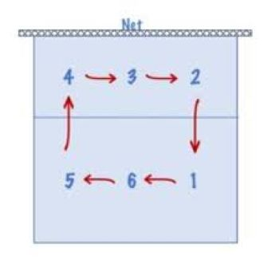

Position Functionallity

While on the court there can only be 6 people at a time. Each of these 6 people will have a role to play depending on where they are on the court. Remember: each time your team earns a point during you opponents serve, your team rotates clockwise.
Seen at right, the server (1), would go to the 6 position and everyone would rotate clockwise.
Positions
Each person on the court has their own role to play depending on where the ball is and where it might be. There are 3 main roles in volleyball: Setter, Spiker, and Libero.
- Setter: This person sits in the middle of the net ready at all times to recive a fast paced ball from their backline of Liberos. Their job is to set up a high ball for the spiker to hit on the opposing side. Often times they are the leader of the group and make the plays calls.
- Spiker: These people are sitting on the outside of the net waiting for a good set from the setter. These peoples jobs are to jump high and hit the ball as hard as they can towards the ground making sure they get the ball past the possible blockers.
- Libero: These people are often in the back row far from the net. These poeple's main job is to protect against serves and spikes. Often times you will see these people dive for fast paced balls heading for the ground.